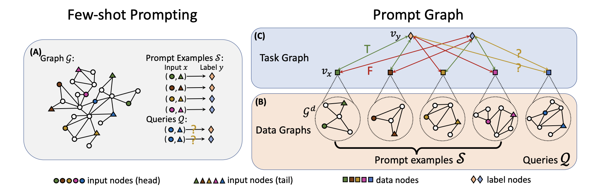
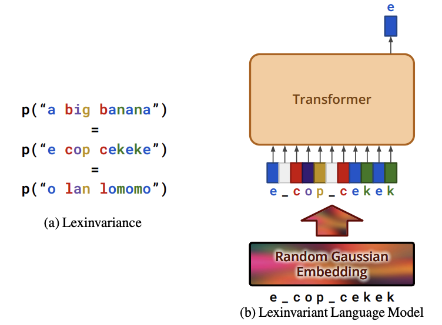
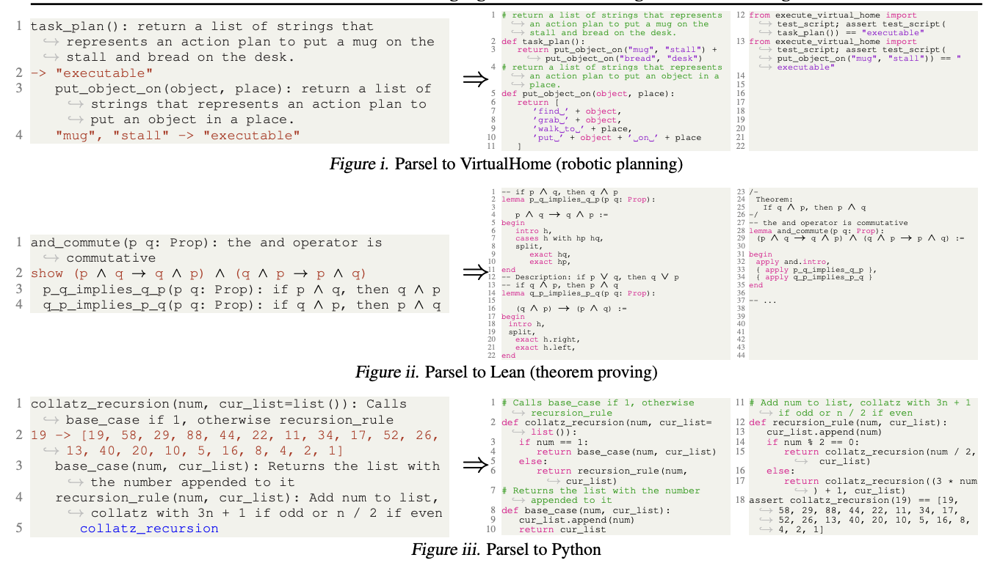
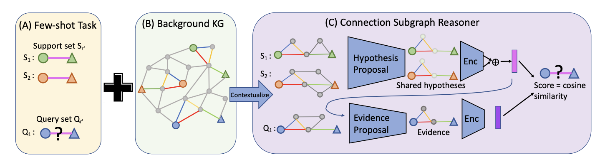
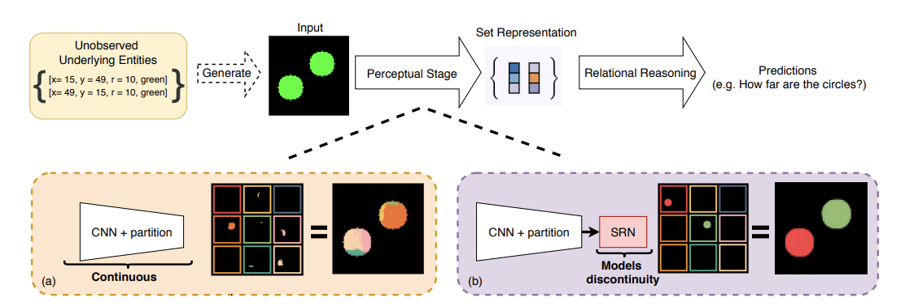
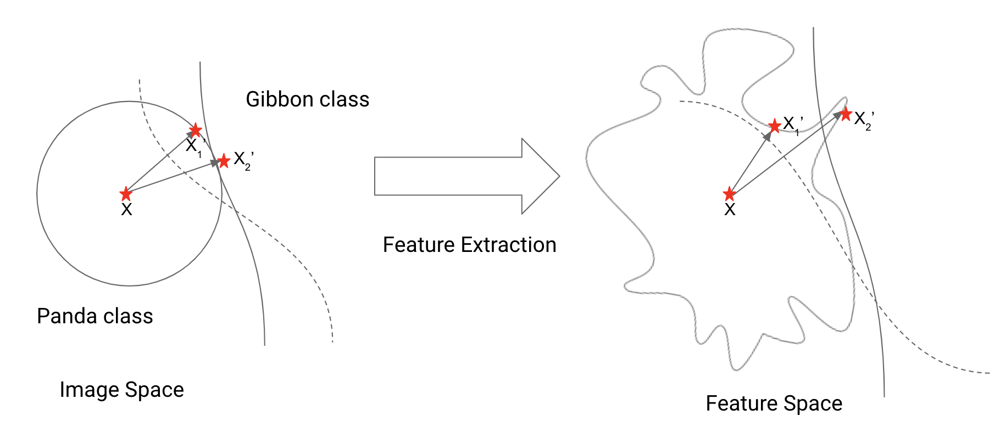

Publications
-
PRODIGY: Enabling In-context Learning Over Graphs
Qian Huang, Hongyu Ren, Peng Chen, Gregor Kržmanc, Daniel Zeng, Percy Liang, Jure Leskovec
Spotlight @ NeurIPS 2023
[Paper] [Code]
TL;DR: We enable in-context learning over graphs with a novel in-context task representation PromptGraph and a corresponding pretraining framework PRODIGY. We empirically demonstrate the strong in-context learning performance induced on tasks over citation networks and knowledge graphs, with on average 18% improvement upon contrastive pretraining (with hard-coded adaptation for in-context setup) and 33% over standard finetuning with limited data. -
Lexinvariant Language Models
Qian Huang, Eric Zelikman, Sarah Li Chen, Yuhuai Wu, Gregory Valiant, Percy Liang
Spotlight @ NeurIPS 2023
[Paper]
TL;DR: Investigate lexinvariant language models that do not have fixed token embedding and therefore are invariant to lexical symbols. We show that such a language model still attains surprisingly comparable perplexity to a regular language model given a sufficiently long context context, both theoretically and empirically.` We argue that it essentially learns to perform in-context Baysian deciphering and it can achieve significantly better performance over various synthetic reasoning tasks. -
Parsel: A Unified Natural Language Framework for Algorithmic Reasoning
Eric Zelikman, Qian Huang, Gabriel Poesia, Noah D. Goodman, Nick Haber
Spotlight @ NeurIPS 2023
[Paper] [Code]
TL;DR: We introduce Parsel, a framework enabling automatic implementation and validation of complex algorithms with code LLMs, based on hierarchical function descriptions in natural language. Parsel can be used across domains requiring hierarchical reasoning, e.g. code synthesis, theorem proving, and robotic planning. Beyond modeling capabilities, Parsel allows problem-solving with high-level algorithmic designs, benefiting both students and professional programmers. -
Few-shot Relational Reasoning via Connection Subgraph Pretraining
Qian Huang*, Hongyu Ren*, Jure Leskovec
Accepted to NeurIPS 2022
[Paper] [Code]
TL;DR: We proposed a novel few-shot relational reasoning framework Connection Subgraph Reasoner (CSR), which can make predictions for the target few-shot task directly via self-supervised pretraining on subgraph matching. We demonstrated that CSR can achieve significant gains of up to 56% on the more challenging inductive few-shot tasks where the entities are also unseen during (pre)training. -
Combing Label Propagation and Simple Models Out-performs Graph Neural Networks

Qian Huang*, Horace He* , Abhay Singh, Ser-Nam Lim, Austin Benson
Accepted to ICLR 2021
[Paper] [Code]
TL;DR: We demonstrated that for most popular transductive node classification tasks, state-of-the-art GNN models can be out-performed by a shallow MLP prediction followed by the post-processing of two Label Propagation variants. This simple framework directly uses label information and drastically reduces the parameters and runtimes needed to achieve state-of-the-art. -
Better Set Representations for Relational Reasoning
Qian Huang*, Horace He* , Abhay Singh, Yan Zhang, Ser-Nam Lim, Austin Benson
Accepted to NeurIPS 2020
[Paper] [Code] [ICML OOL workshop Talk]
TL;DR: Extracting sets of entities from unformatted data automatically is important for supporting reasoning models such as graph neural networks or transformers. Existing popular methods are generally task dependent or ignore the set structure. We show that by generating sets "properly", we can improve performance and robustness on a wide variety of tasks. -
Enhancing Adversarial Example Transferability with an Intermediate Level Attack
Qian Huang*, Horace He*, Isay Katsman*, Zeqi Gu*, Serge Belongie, Ser-Nam Lim
ICCV 2019
[Paper] [Code] [Talk at WIML Workshop] [Twitter Thread] [Cornell Chronicle]
TL;DR: We can improve the transferability of an adversarial example significantly by maximizing the projection of perturbation onto its original perturbation direction in the feature space. Choosing the layer at which we optimize the projection changes the transferability significantly. Although we provided some justification for the method, it remains mysterious to us why this method can discover the vulnerability of other CNNs based on one model's vulnerability.